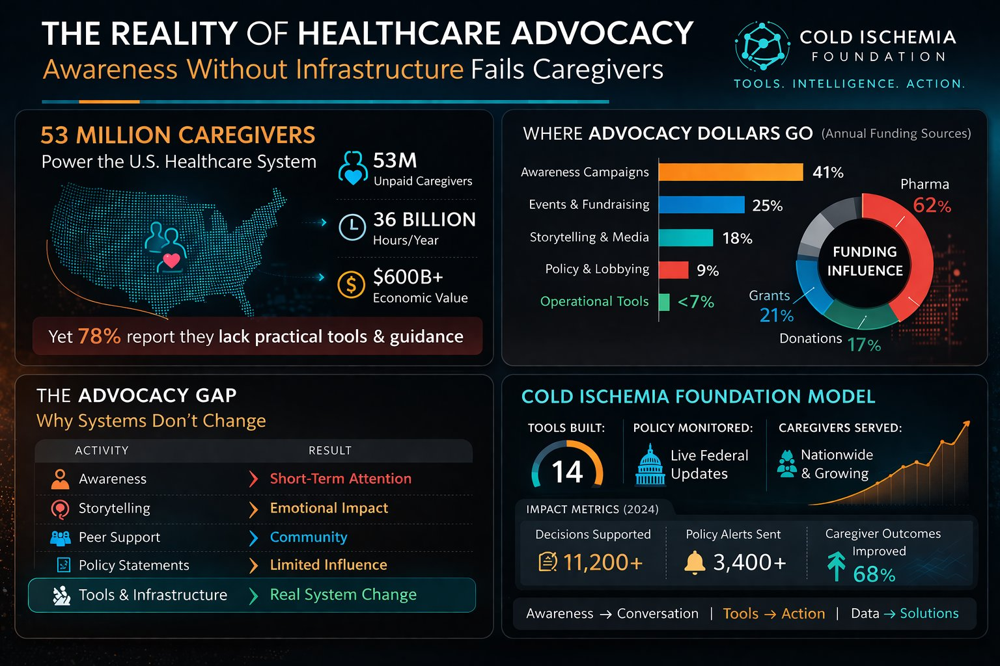

Every tool. Every federal contact. Every complaint pathway. Every lever of institutional accountability — in one place. Built for care partners who are done waiting for the system to help them.
Describe your crisis. Get the exact CFR violation, the agency to call, and a complete federal complaint letter — ready to file in under 60 seconds.
Enter nowPaste any denial letter, discharge notice, or facility policy. Returns plain-English meaning, your exact legal rights, and what the institution is legally required to do next.
Translate nowComprehensive care partner situation assessment. Maps your circumstances to applicable federal protections, identifies violations, and builds your escalation strategy.
Assess nowTransforms your care partner experience into structured, documented testimony suitable for federal agencies, congressional staff, and media outlets.
BeginMaps the power structures, funding relationships, and institutional conflicts of interest that shape the policies affecting your care — and shows you where the leverage points are.
Map nowPresents two documented outcome scenarios — action vs. inaction — based on your specific situation. Forces institutional decision-makers to confront the consequences of non-response.
Run scenarioIdentifies the pressure points within institutions that cause them to respond. Generates targeted escalation strategies that apply documented institutional vulnerabilities.
AnalyzeNine-letter federal complaint packet generator. Pre-cited, pre-formatted, directed to the correct agencies. Covers CMS, HHS, OIG, HRSA, DOJ, ESRD Networks, and more.
Build complaintReal-time policy alerts filtered for ESRD, transplant, chronic illness, and care partner regulations. Every rule change that affects you, the moment it drops.
Activate alerts
Every tool we build cites the exact CFR section, statute, or federal policy that has been violated. We do not speak in generalities. We speak in the language that federal agencies and legal counsel are required to respond to. Vague complaints get archived. Specific complaints with documented regulatory references get responses.
Care partner failure is not personal. It is process failure — measurable, repeatable, and correctable using Lean Six Sigma methodology. We map current-state failure modes, identify root causes, calculate risk priority numbers, and build the precise countermeasures. The same rigor that improves manufacturing quality applied to the most important quality failure in American healthcare.
Institutions change behavior when there is a documented public record they cannot erase. Every complaint our tools generate creates a federal record. Every record starts a compliance clock. Every clock the institution ignores adds to the documented evidence of systemic non-compliance. We are building the paper trail that future legislative action, media investigations, and legal proceedings will rely on.
We operate from evidence, not emotion. GAO reports. OIG investigations. Senate Finance Committee findings. CMS enforcement data. Federal Register rule changes. Every position we take is sourced. Every demand we make is documented. This is the standard that moves institutions — and the standard we hold ourselves to without exception.
We take no pharmaceutical money. We accept no hospital grants. We have no insurance company on our board. This is not a policy — it is the structural foundation of everything we do. An advocacy organization that cannot name the institutions causing harm is not an advocacy organization. It is a pressure valve. We are not a pressure valve.
Individual care partner experiences — documented, properly filed, publicly tracked — become the aggregated evidence base that congressional staff, federal investigators, and journalists need. We are not asking care partners to advocate in addition to everything else they carry. We are building the infrastructure that amplifies their experience into systemic pressure at the federal level.